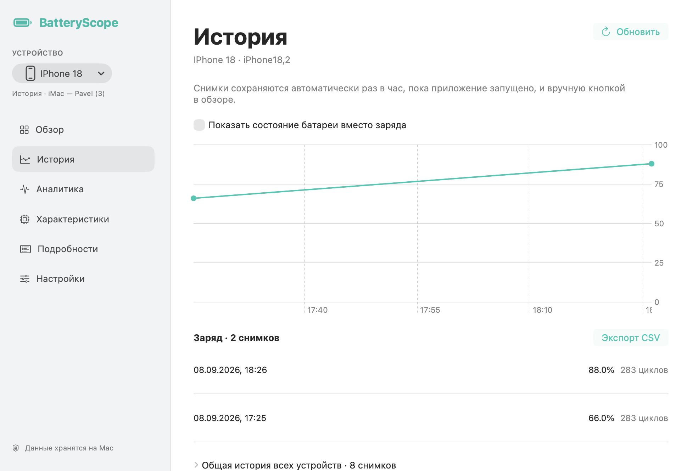

3. История и экспорт
Приложение сохраняет снимки автоматически раз в час, пока работает; снимок также можно сохранить вручную из обзора. В истории выбранного устройства переключатель меняет показатель графика: заряд или состояние батареи. «Экспорт CSV» сохраняет таблицу. Раскройте «Общая история всех устройств» для общего списка.

График и список сохранённых измерений.